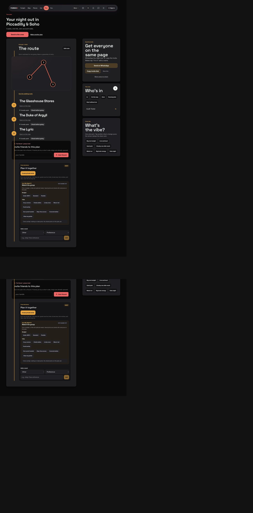
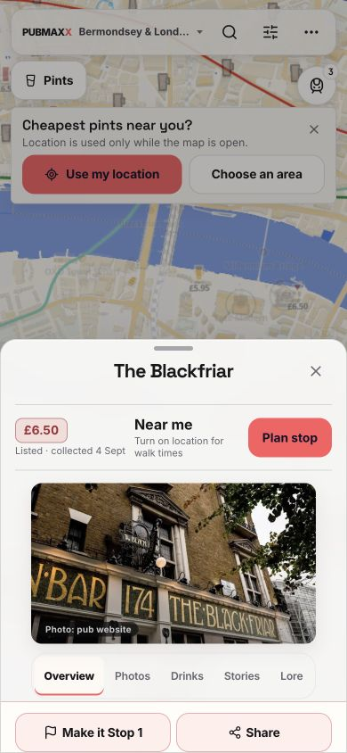
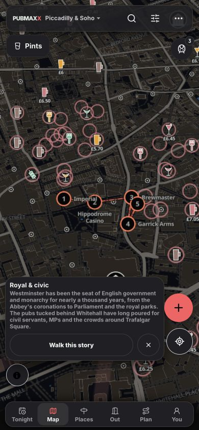
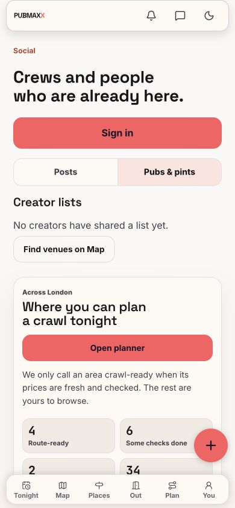

Recovery now underway on a separate branch
Your instruction: “Fix everything one by one, restore what was missing, show journeys and focus on London.” Three bounded implementation lanes preserve this audit snapshot. Privacy, accessibility and price correctness come before journey recovery. No deployment or migration is authorized.
Seven-occasion acceptance contractAll 14,547 tracked paths have an explicit review status. Most received inventory or pattern screening, not complete semantic inspection. Real-provider account flows, native runtime, full historical traversal and several operational boundaries remain unverified. This report must not be used as a universal “all clear”.
Private cover bytes remain public
A retained URL bypasses the private-profile projection. Independent source execution confirms the boundary mismatch.
Read SEC-01Filters and prices lose evidence
Slim map pins bypass access requirements. Half-pint observations enter pint rankings. Fix the consumer boundaries.
Restore outcomes, not old screens
Date, quiet, gardens and crawls largely remain. Dancing is partial. A browse-first occasion layer can reuse current capabilities.
Prioritized findings
Source fixtures execute unchanged functions with infrastructure doubles. They prove the stated seams, not deployed database or native-device behavior. Expand a finding for impact, remedy and evidence.
Broken entry. Working building blocks.




| Journey / environment | Result | What was actually observed |
|---|
What is missing, hidden or superseded?
| Capability | Current classification | Evidence / recovery direction |
|---|
TonightAgentPanel
Introduced 942f7a25f, removed da334c310 to keep one planning composer. Preserve consolidation. Port only unique useful behavior.
Nearby night-out places
f32a43454 / f804e1a3e → ab7330827. Release-trust cleanup; exact rationale unresolved. Reusable contract and late-food code remain. Rebuild only missing outcomes under current source rules.
No evidence established that a complete historical disco planner was deleted. Event classification exists; consistent dancing browse/ask intent does not.
All 62 page entrypoints and explicit runtime limitsTest results, without laundering failures
| Check | Status | Evidence and limits |
|---|
Passing a source-string fence does not prove a visible feature. The music lane demonstrates this directly: expected strings exist while valid rows are rejected.
Search all 14,547 tracked files
“Static reviewed” means recorded source inspection, not runtime correctness. “Pattern screen” detects selected markers only. “Asset decoded” proves image readability, not visual quality or provenance. Generated outputs still need generator-level reasoning.
| Tracked path | Review status | Method / limits |
|---|
Repair trust. Restore all outing outcomes.
Dates, friends and dancing, quiet drinks, music, gardens and crawls all belong in the recovery scope. Shared evidence and routing contracts come first. Implementation is now authorized in a separate recovery worktree. This section records the order; completed fixes will carry their own tested revision.
Direction already settled
Evidence still needed
Which permitted sources can sustain club/event coverage? Who owns refresh failures? Which editorial estimates will carry an author, basis and review date? These require source/operational evidence, not another interface or an invented score.
Use the review surface to annotate individual findings. Your explicit follow-up authorized application fixes. Deployment remains separate.